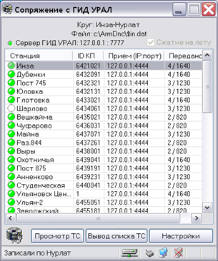
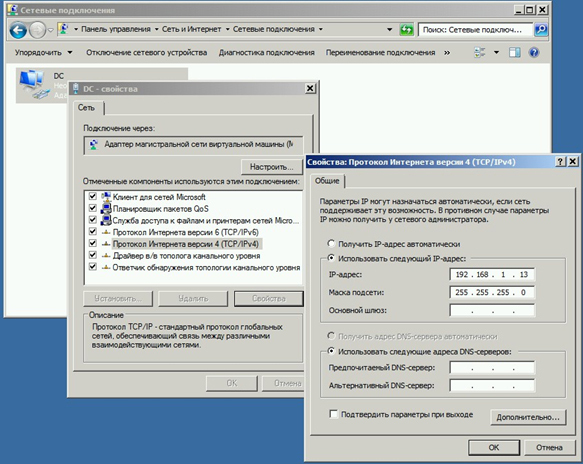
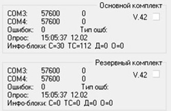

2. Условия производства работ
2.1. Анализ работы компьютера по локальной сети и коммутируемым каналам связи производится без прекращения функционирования системы.
2.2. Работа производится электротехническим персоналом, имеющим группу по электробезопасности при работе в электроустановках до 1000 В не ниже III, перед началом работ проинструктированным в установленном порядке.
2.3. К работе допускается обслуживающий персонал, прошедший специальную подготовку и выдержавший испытания в знаниях условий эксплуатации системы в соответствии с процедурами, принятыми в ОАО «РЖД».
2.4. Допуск на объект, оформление записей в журналах, контроль качества работ, выполняемых подрядными организациями, участие в приемке выполненных работ осуществляется эксплуатационным персоналом в соответствии с требованиями Инструкции по техническому обслуживанию и ремонту устройств и систем сигнализации, централизации и блокировки, утвержденной распоряжением ОАО «РЖД» от 30 декабря 2015 г. № 3168р.
5. Обеспечение безопасности движения поездов
5.1. Анализ работы компьютера по локальной сети и коммутируемым каналам связи производится в технологическое «окно» с согласия поездного диспетчера (далее – ДНЦ).
5.2. Работа выполняется без оформления записи в Журнале осмотра путей, стрелочных переводов, устройств сигнализации, централизации и блокировки, связи и контактной сети формы ДУ-46 (далее – Журнал осмотра).
5.3. При выполнении работы обеспечить безопасность движения в соответствии с требованиями Инструкции по обеспечению безопасности движения поездов при технической эксплуатации устройств и систем СЦБ ЦШ-530-11, утвержденной распоряжением ОАО «РЖД» от 20 сентября 2011 г. № 2055р.
Примечание. Здесь и далее по тексту целесообразно проверить действие ссылочных документов. Если ссылочный документ заменен (изменен), то при пользовании данной картой технологического процесса следует руководствоваться заменяющим (измененным) документом. Если ссылочный документ отменен без замены, то применяется та часть текста, где не затрагивается ссылка на этот документ
7. Технология выполнения работ
Анализ работы компьютера по локальной сети и коммутируемым каналам связи.
ПРИМЕЧАНИЕ: Взаимодействие всех программных модулей ПО ДЦ «ЮГ» осуществляется по сетевому протоколу «TCP/IP», в некоторых случаях по протоколу «multicast».
7.1. Проверить состояние всех межмодульных сетевых соединений, контролируемых в программных комплексах ПО ДЦ ЮГ.
7.1.1. В основном окне программы проверить подключенных клиентов станции связи в панели «Клиенты станции связи» (Рисунок 1).
Рисунок 1. Панель «Клиенты станции связи».
7.1.2. Проверить исходящие и входящие соединения модуля Управления, которые отображаются в окне «Сетевые соединения», активируемое с помощью меню «Сервис -> Сетевые клиенты модуля Управление» (Рисунок 2).
Рисунок 2. Окно «Сетевые соединения».
ПРИМЕЧАНИЕ: В левой панели отображаются исходящие подключения модуля к серверам станциям связи. В правой панели отображаются входящие клиентские подключения модуля управления.
ВНИМАНИЕ: Состояние исходящих подключений модуля к серверам станций связи отображается цветом индикатора: зеленый – есть соединение, красный – нет соединения, желтый – отсутствие данных более 30 сек при установленном соединении. В столбце «Обмен» отображается статистика приема (в байтах и пакетах) и отправления (в пакетах).
ВНИМАНИЕ: Каждому из подключенных клиентов с заданной периодичностью отправляются срезы данных с полным состоянием объекта управления и системы управления.
ВНИМАНИЕ: В столбце «Прм/Прд» отображается статистика приема/передачи в байтах для входящих клиентских подключений модуля управления.
7.1.3. Проверить состояние подключений станций связи, которые контролируются в правой части строки состояния модуля Управление (Рисунок 3).
Рисунок 3. Состояние подключений станций связи.

Слева - Основной канал
Справа - Резервный канал
ВНИМАНИЕ: Каждая станция связи отображается здесь двумя индикаторами, первый отображает состояние основного канала, второй – обратного (Рисунок 3). Зеленый цвет индикатора – канал работает, желтый цвет индикатора – отсутствует соединение.
7.1.4. Проверить в модулях Табло и АРМ ШН состояние клиентского подключения, которые контролируются в правой части строки состояния модуля Управление (Рисунок 4).
Рисунок 4. Состояние клиентского подключения.
ВНИМАНИЕ: Зеленый цвет индикатора соответствует нормальной работе сетевого соединения, красный – отсутствию соединения.
7.1.5. Проверить состояние входящих и исходящих сетевых соединений в списке «Статистика соединений», контролируемых в окне модуля Шлюз СПД (Рисунок 5).
Рисунок 5. Окно модуля Шлюз СПД.
ПРИМЕЧАНИЕ: Список серверов данных содержит IP-адреса и порты точек подключения модуля для получения данных состояния объекта, основного и резервного АРМ ДНЦ (состояние этих подключений отображается в первых строчках списка «Статистика соединений»), далее в списке отображаются все подключенные клиенты (удаленные АРМ ШН). Столбцы Передано и Получено отображают в реальном времени статистику приема передачи в пакетах/байтах.
7.1.6. Проверить состояние входящих и исходящих сетевых соединений модуля, контролируемых в окне модуля Шлюз ГИД УРАЛ (Рисунок 6).

Рисунок 6. Окно модуля Шлюз ГИД УРАЛ.
ПРИМЕЧАНИЕ: В окне отображается перечень станций, состояние приема данных по каждой станции, IP-адрес и порт источника данных, статистику приема/передачи.
ВНИМАНИЕ: Индикатор «Сервер ГИД УРАЛ» контролирует состояние сетевого подключения к указанному серверу ГИД УРАЛ. Зеленый индикатор – нормальная работа, желтый – отсутствие подключения, красный – ошибка сетевого интерфейса.
7.1.7. Проверить доступность компьютеров в сети с помощью консольной утилиты «ping» с указанием IP-адреса узла, доступность которого следует проверить, при этом система отобразит результаты 4 (четырех) кратной проверки доступности узла (Рисунок 7), если узел не доступен, выводится сообщение, представленное на рисунке 8.
Рисунок 7. Доступность компьютера в сети.
Рисунок 8. Узел не доступен.
ВНИМАНИЕ: В случае недоступности узла необходимо проверить корректность подключений патч-кордов и настройки сетевых интерфейсов недоступного хоста. Проверка настроек сетевых интерфейсов выполняется запуском оснастки «Сетевые соединения» консольной командой «ncpa.cpl». При этом система отобразит окно «Сетевые соединения», в котором будут отображены все доступные сетевые адаптеры. Необходимо выбрать нужный адаптер и в контекстном меню выбрать опцию «Свойства». В появившемся окне свойств адаптера необходимо выбрать в списке Протокол интернета версии 4 (Tcp/IpV4) и нажать кнопку «Свойства». Будет отображено окно настройки сетевого протокола, используемого системой ДЦ. Необходимо убедиться в соответствии установок статического IP-адреса и маски подсети с эталонными значениями, принятыми в данном центре управления перевозками, при необходимости внеся изменения (Рисунок 9). После внесения изменений перезагрузить компьютер.

Рисунок 9. Проверка установки статического IP-адреса и маски подсети.
7.2. Провести анализ работы каналов связи.
7.2.1. Открыть главное окно программного модуля «Станция связи» (Рисунок 10).
Рисунок 10. Главное окно программного модуля «Станция связи».

Модем станции связи
Каналообразующая аппаратура
Поле «Цикл, мс»
Панель состояния обмена
Клиент станции связи
7.2.2. Проверить работоспособность модемов станции связи по соответствующим индикаторам панели ПУ в левой верхней части окна (Рисунок 10).
ВНИМАНИЕ: Верхний индикатор соответствует прямому каналу, нижний – обратному (обводному). Зеленый цвет индикатора соответствует нормальной работе модема, красный – отказу модема, желтый (только для аналоговых модемов) – отсутствия соединения со смежной станцией (отсутствие «несущей» в канале).
ВНИМАНИЕ: Если индикатор горит красным цветом, необходимо проверить соединительные кабели, перезапустить программный модуль, при необходимости произвести замену модема.
7.2.3. Проверить работу каналообразующей аппаратуры (Рисунок 10) путем анализа индикаторов в цепочке опрашиваемых станций.
ВНИМАНИЕ: Индикаторы соответствуют двум модемам. Левый индикатор с цифрой 3 (условное обозначение асинхронного интерфейса #3) соответствует модему со стороны прямого канала, правый с цифрой 4 (условное обозначение асинхронного интерфейса #4)– со стороны обратного как для аналоговых линий, так и для цифровых. Зеленый цвет индикатора соответствует нормальной работе модема, красный – отказу модема, желтый (только для аналоговых модемов) – отсутствия соединения со смежной станцией (отсутствие «несущей» в канале).
ВНИМАНИЕ: Если оба индикатора красные, со станцией нет связи ни по одному каналу, и состояние модемов неизвестно (Рисунок 11).
Рисунок 11. Состояние модема при отсутствии связи ни по одному каналу.
Модем с неизвестным состоянием
ВНИМАНИЕ: В случае использования аналоговых каналов при разрыве соединения между двумя смежными станциями индикаторы соответствующих смежных модемов должны быть окрашены в желтый цвет (Рисунок 12), что соответствует режиму установки соединения точка-точка. Ситуация, когда в какой-либо паре смежных станций с одной стороны индикатор модема желтый, а с другой зеленый, требует ручного вмешательства. В этом случае модем с зеленым индикатором не почувствовал разрыва соединения, такое бывает в зашумленных линиях, когда фоновый шум воспринимается как несущая. В этом случае необходимо перезапустить микропроцессорный блок станции.

Рисунок 12. Индикаторы смежных модемов.
Смежные модемы
7.2.4. Проверить работу станции связи в процессе циклического опроса, при этом активная станция, с которой выполняется информационный обмен в настоящее время, помечается белым индикатором-бегунком (Рисунок 13).

Рисунок 13. Белый индикатор-бегунок.
Белый индикатор-бегунок
ВНИМАНИЕ: Если бегунок отображается у интерфейса #3, станция опрашивается по прямому каналу, если у интерфейса #4 – по обратному.
ВНИМАНИЕ: Переключение стороны опроса производится при двух (и более) сбоях связи со станцией подряд.
7.2.5. Проверить скорость обмена информацией в поле «Цикл, мс» по времени последнего цикла опроса всех станций.
7.2.6. Проверить число ошибок информационного обмена по каждой станции в панели состояния обмена станции, для этого нужная станция должна быть предварительно выбрана нажатием кнопки с краткой аббревиатурой станции над изображением контролируемого пункта (Рисунок 14).
Рисунок 14. Выбор станции.
Краткая аббревиатура станции
ВНИМАНИЕ: Панель состояния обмена содержит следующие сведения по основному и резервному блокам контролируемого пункта: линейная скорость обмена в каналах #3 и #4, число ошибок обмена и тип последней зафиксированной ошибки, время приема последних данных, длины блоков принятых данных (Рисунок 15).

Рисунок 15. Окно с ошибками информационного обмена.
7.2.7. Проверить работу станции связи на одном канале связи (сначала на прямом, потом на обратном). Для этого следует воспользоваться кнопками временного отключения каналов, показанными на Рис.16. Верхняя кнопка с фиксацией отключает прямой канал на все время утопленного состояния, нижняя - обратный. При отключении прямого каналов опрос станций производится по обратному каналу, и наоборот. В этом случае любой разрыв приема/передачи между любыми станциями приводит к «отсечению» всех оставшихся станций. Необходимом выполнить проверку для прямого канала, затем для обратного. При обнаружении разрывов в каналах принять меры для восстановления.
После выполнения данной проверки необходимо включить оба канала путем (кнопки в отжатом состоянии).
Рисунок 16. Временное отключение каналов.
Временное отключение каналов
7.2.8. При наличии двух каналов связи используется следующий алгоритм выбора стороны для опроса, обеспечивающий автоматическую адаптацию к обрывам. Прямой канал считается приоритетным, первоначально каждая станция опрашивается по прямому каналу. Если станция однократно не ответила по прямому каналу, делается повторная попытка и, если станция отвечает, опрос продолжается по прямому каналу. Если станция не ответила на две попытки обращения, она помечается для опроса по обратному каналу и опрашивается по обратному каналу. Если она отвечает по обратному каналу, пометка остается, и в следующем цикле станция сразу опрашивается с работающей стороны. Если станция не отвечает по обоим каналам, она помечается, как станция с отказом связи, в этом случае на каждом цикле опроса делается однократная попытка связи с по каждому каналу.
7.2.9. Периодичность опроса каждой станции зависит от длины кольца, скорости передачи в канале и качества каналов связи. Периодичность опроса каждой станции не должна превышать регламентного времени для систем ДЦ: 6 сек. При использовании аналоговых каналов низкого качества это значение может быть превышено. В этом случае целесообразно пересмотреть организацию связи и разбить участок на 2 или 3 независимых кольца.
7.2.10. В случае необходимости анализа каналов связи за заданный предыдущий период, необходимо воспользоваться программным модулем мониторинга каналов связи, установленном на АРМ ШН. Этот модуль позволяет просмотреть почасовые диаграммы состояния каналов в заданный момент времени.
ПРИМЕЧАНИЕ: Работа с модулем описана в документе «Руководство пользователя «Модуль мониторинга каналов связи»» (36818650.50 5200 003-02 91 18).
7.3. Заполнить форму отчетных документов, представленную в таблице 1.
Таблица 1.
| Дата |
Наименование
диспетчерского круга |
Результат
проверки |
Фамилия И.О.
исполнителя |
Подпись |
| ... |
... |
... |
... |
... |
| ... |
... |
... |
... |
... |
7.4. В случае невозможности провести анализ работы компьютера по локальной сети и коммутируемым каналам связи передать информацию диспетчеру центра диагностики и мониторинга для организации оповещения разработчика системы (центра сервисного обслуживания) для принятия мер.
8. Заключительные мероприятия, оформление результатов работы
После окончания анализа работы компьютера по локальной сети и коммутируемым каналам связи оповестить ДНЦ об окончании работы, сделать запись в журнале ШУ-2 о проведенной работе и внести результаты выполнения работы в систему ЕК АСУИ в соответствии с требованиями, изложенными в разделе 4 «Порядка планирования, учета и контроля выполнения работ в хозяйстве автоматики и телемеханики», утверждённого распоряжением ОАО «РЖД» от 13 января 2020 г. №20/р.
Результаты работы специализированная организация оформляет в журнале учета выполненных работ по техническому обслуживанию и ремонту устройств и систем ЖАТ по форме, представленной в регламенте взаимодействия между участниками процесса технического обслуживания и ремонта систем и устройств железнодорожной автоматики и телемеханики ОАО «РЖД», осуществляемых специализированными организациями, утвержденном распоряжением ОАО «РЖД» от 30 декабря 2017 г. № 2827р.
Начальник отдела ПКБ И
Конструктор 1 категории ПКБ И
Е.Н. Иванов
В.В. Харламов